FundamentosAbierto desde el principio
Zero Overlap
- Objetivo
- 5 vueltas válidas sin pisar freno y acelerador a la vez.
- Entrena
- Soltar el acelerador del todo antes de frenar.
- Vueltas
- 5
En la app: Ejercicios → Zero Overlap → Conducirlo ahora.
Brum es una academia de sim racing en tu PC: ejercicios cortos que te dicen qué hacer en pista, te corrigen con tu telemetría y te dan Bronce, Plata u Oro.
Es una beta. Ya puedes usarla. Entrena y analiza tus tandas desde hoy; seguimos construyéndola, así que encontrarás fallos y funciones por terminar.
Beta 0.8.2 · 125 MB · En construcción. Tu opinión cuenta.
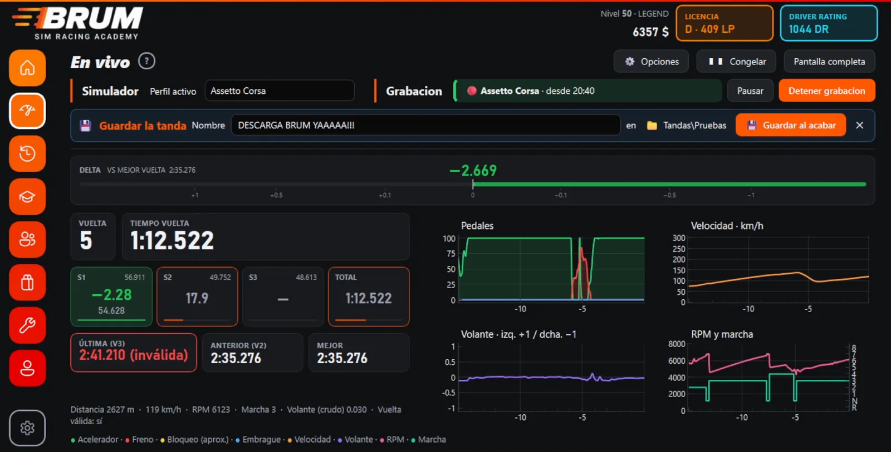
Elige lo que más te frustra y mira el ejercicio que lo trabaja. Todos te explican qué hacer antes de salir.
FundamentosAbierto desde el principio
En la app: Ejercicios → Zero Overlap → Conducirlo ahora.
Cada ejercicio te dice qué hacer y cuántos fallos se permiten para el Bronce, la Plata o el Oro. Lo intentas, Brum mira tu telemetría vuelta a vuelta y te dice dónde fallaste. Y repites.
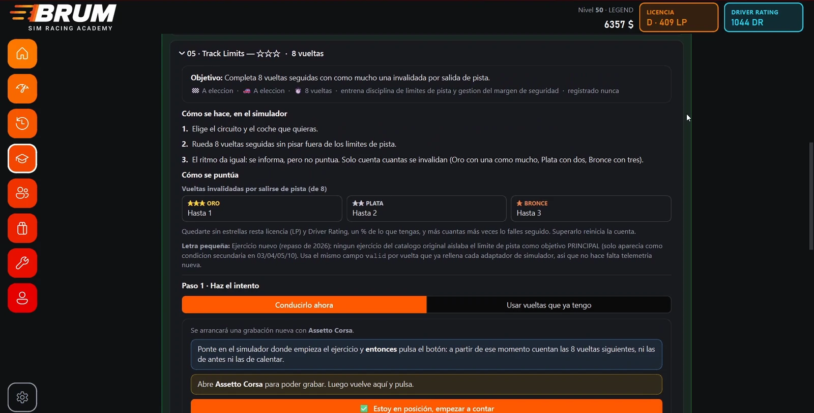
18 ejercicios en cuatro niveles. Fundamentos está abierto desde el principio; los demás se abren con la XP que ganas entrenando.
Abierto desde el principio
Lo básico: salir, frenar donde toca, ser suave, no pisar fuera y no mezclar gas y freno.
Se abre con 800 XP
La curva por partes: frenar más tarde, el vértice y elegir entre entrada y salida.
Se abre con 2000 XP
Sin red: un grip que no conoces, una apuesta y sin asistencias.
Se abre con 4000 XP
Consistencia de verdad: tandas largas clavadas al mismo ritmo y el examen final.
Qué hacer en el simulador, paso a paso, y qué pide el Oro, la Plata y el Bronce. Antes de salir, no después.
Con «Conducirlo ahora», Brum graba y empieza a contar las vueltas cuando le dices que estás en posición. O, con «Usar vueltas que ya tengo», puntúa vueltas que ya grabaste.
Lee tu telemetría y te dice qué ha fallado y en qué vuelta: aquí, cuántas veces pisaste gas y freno a la vez.
Cada ejercicio da XP, dinero de la app y puntos de licencia. Con la XP se abren los niveles siguientes.
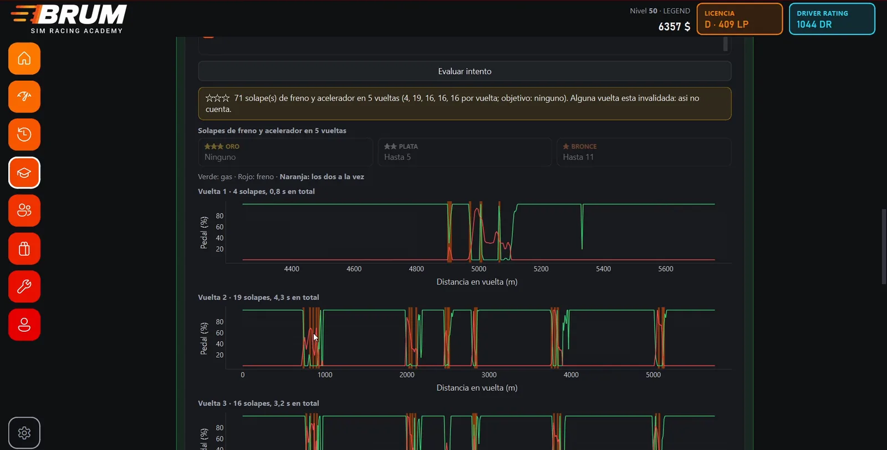
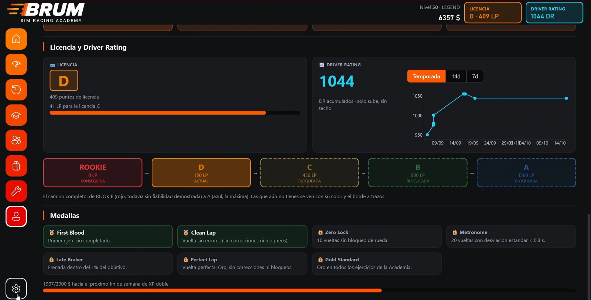
Aprender a pilotar frustra, y mucho. Por eso Brum es un juego: licencia, medallas, rachas y una Tienda donde gastar lo que ganas, para que el camino se haga más llevadero.
LicenciaDe Rookie a A
Los ejercicios suman puntos de licencia. Quedarte sin estrellas resta.
RachaDías seguidos abriendo Brum
Entrar: de 10 a 30 $Salir a pista: de 50 a 70 $ más
Cada día seguido paga 5 $ más que el anterior, hasta el quinto: 100 $ al día si sales a pista.
Hitos
Un día sin entrar la rompe, salvo con Streak Protection (300 $ en la Tienda). Y hay dos rachas más: Clean Streak, intentos limpios seguidos, y Gold Streak, las dos a la vez.
MedallasSe ganan en pista
TiendaCon el dinero que dan los ejercicios y la racha
Pruébalos aquí: pulsa un tema y esta web se pone sus colores.
Debajo de los ejercicios hay telemetría de verdad: fuerzas G, pedales, volante, temperatura y presión de cada neumático, frenos y suspensión. Esto es una vuelta real, a velocidad real: arrastra la barra de abajo para ir a cualquier punto.
Lateral 0.00 GLongitudinal 0.00 G
Después de la tanda, el Historial lo ordena todo: General, Suspensión, Neumáticos y frenos, Dinámica, Fiabilidad, Pista y ayudas y Matemáticos. Y los gráficos X-Y que quieras, como el diagrama GG. Encima de cualquiera puedes dibujar flechas, rayas y notas, y se quedan con la tanda.
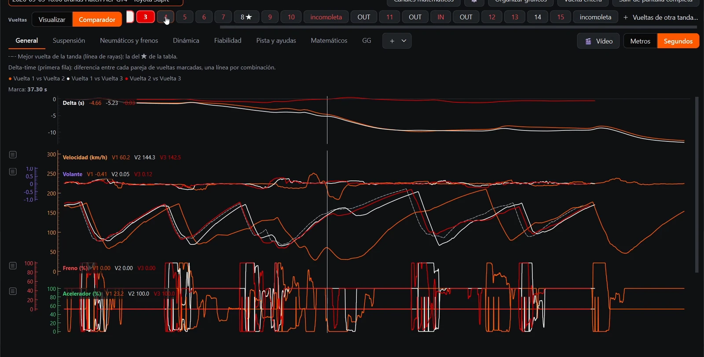
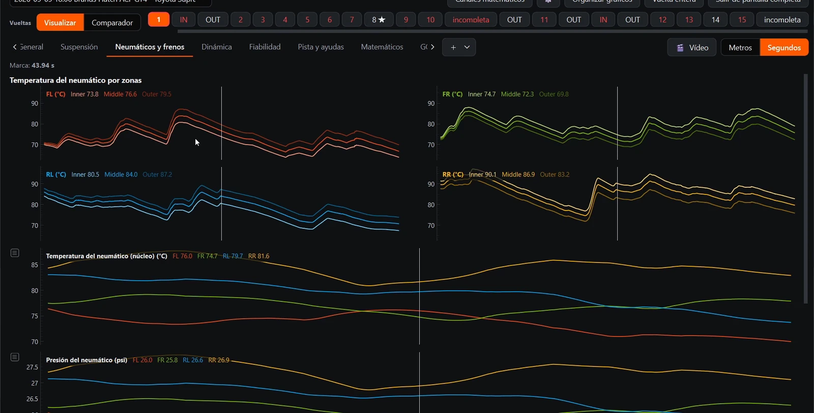
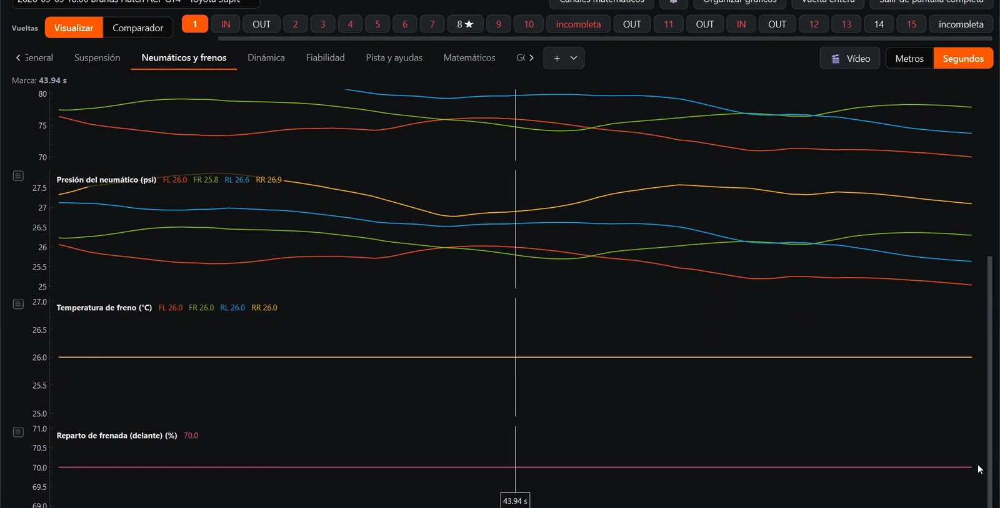
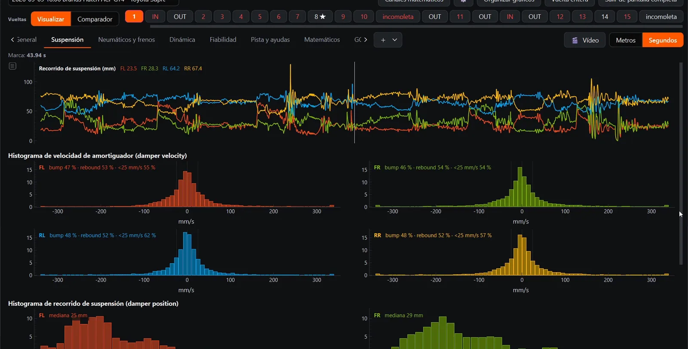
Así se ve En vivo mientras conduces: el delta contra tu mejor vuelta y cada sector, al momento. Tanda real, a doble velocidad.
Después, el Comparador pone dos vueltas una encima de otra, metro a metro. Arrastra por esta y mira dónde se va el tiempo.
−0.000s en 100 m
0 m · Sector 1 · delta acumulado ±0.000 s
Oulton Park · Mazda MX-5 ND Cup · Assetto Corsa EVO · 1:14.847 contra 1:15.777. Telemetría real grabada con Brum.
La progresión real se parece a esto: días en los que todo sale y días en los que no bates tu mejor vuelta por mucho que lo intentes. Aquí, un día baja a 1:00.804; al siguiente, cada tanda se acerca un poco más (1:01.665, 1:01.614, 1:01.029) sin llegar. Hay días así. Por eso Brum premia la racha: lo que cuenta es volver.
1:00.804
Vuelta 13 de 32 · nueva mejor
Más rápida que la anteriorMás lenta que la anteriorTu mejor vuelta hasta ese momento
Vueltas válidas reales del autor de Brum en Brands Hatch con el Mini (Assetto Corsa EVO). Foto de fondo: Circuit Zandvoort, de dronepicr (CC BY 2.0).
Vuelta a vuelta: cada tiempo contra tu mejor, la media y la ideal, la tendencia, la degradación y el consumo. ¿Un trompo o un repostaje? Un botón y esa vuelta deja de contar en las cuentas.
Dile cuánto dura la carrera, en vueltas o en minutos, y con el ritmo y el consumo de tu tanda Brum te dice cuántas vueltas salen, cuánta gasolina meter con una de margen y cuánto caerá el ritmo.
Cada vuelta partida en las curvas del circuito: el tiempo de cada una, tu vuelta teórica y en qué curva se te va cada décima.
Escribe una fórmula y Brum la dibuja: G combinada, solape de freno y acelerador, rake, balance por recorridos…
Lee y edita tus setups de Assetto Corsa y Assetto Corsa EVO con los rangos reales de cada coche, combustible y estrategia incluidos.
Pasa una tanda a MoTeC i2 o mándasela a otro piloto en un archivo .brum. La que te manden se abre con doble clic.
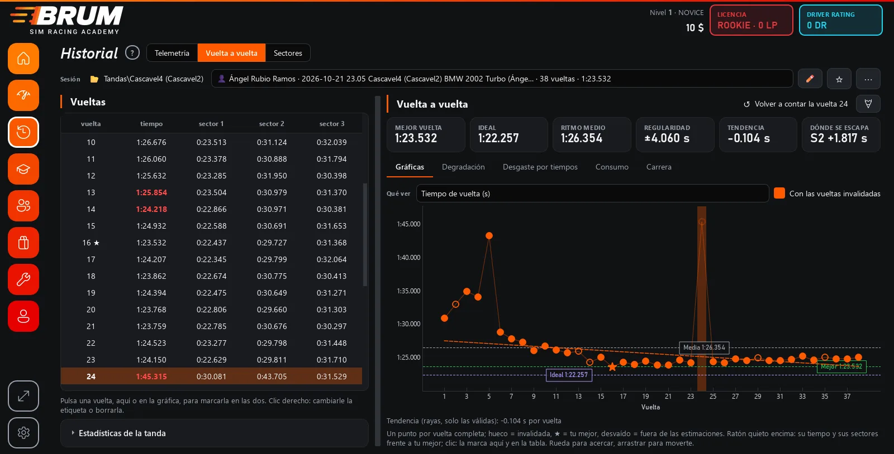
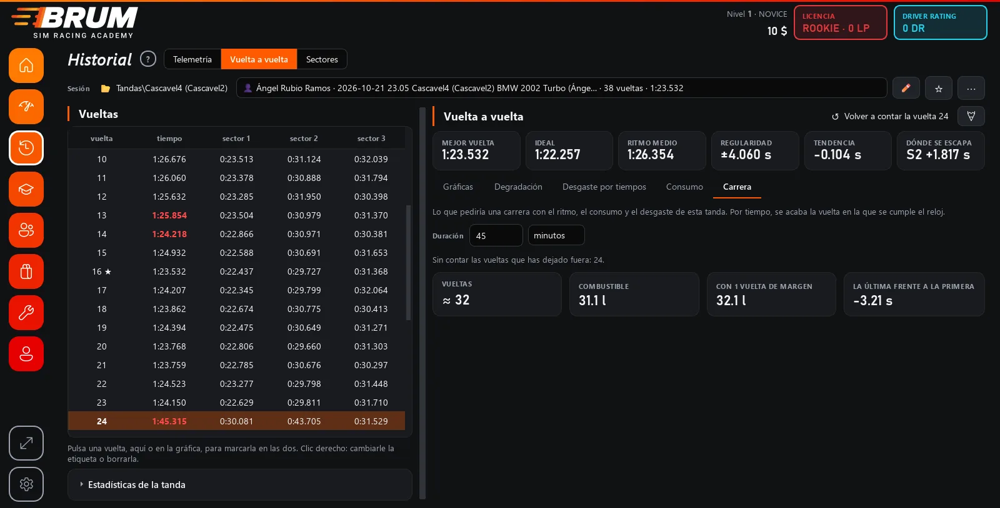
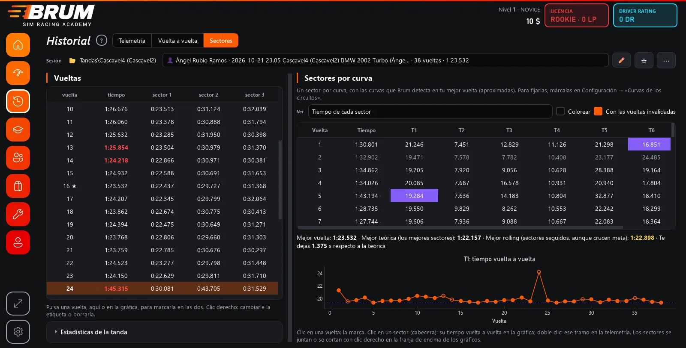
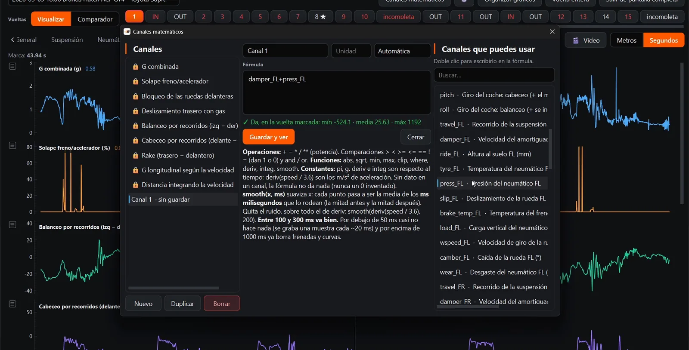
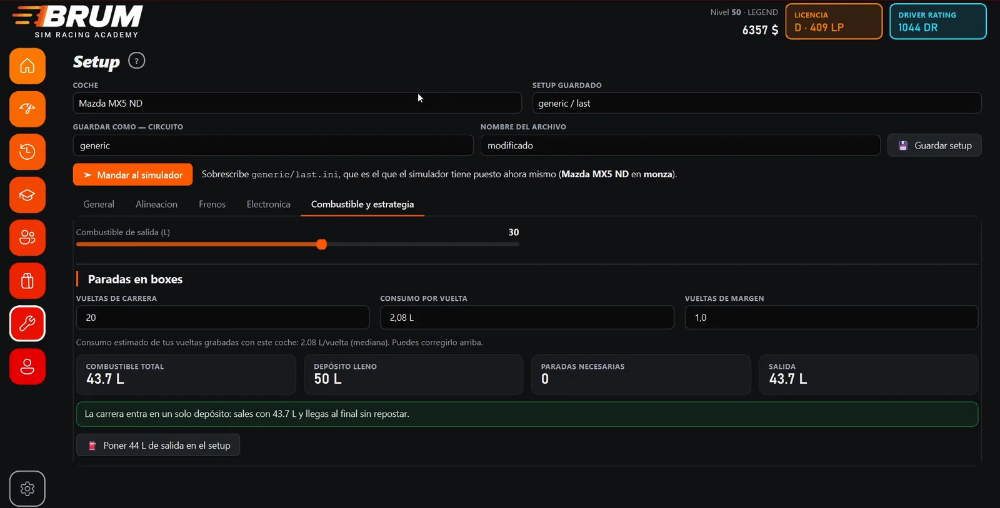
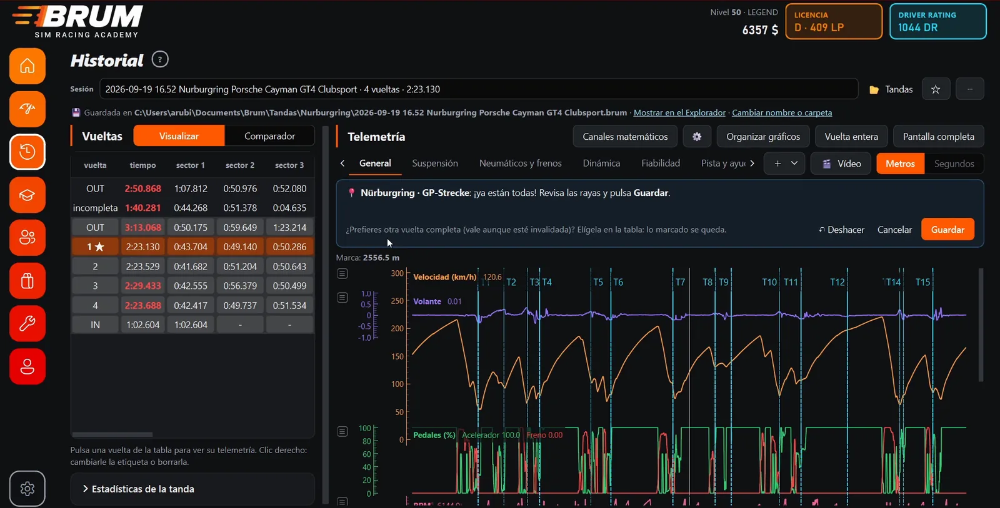
Eliges el tuyo y Brum graba solo.
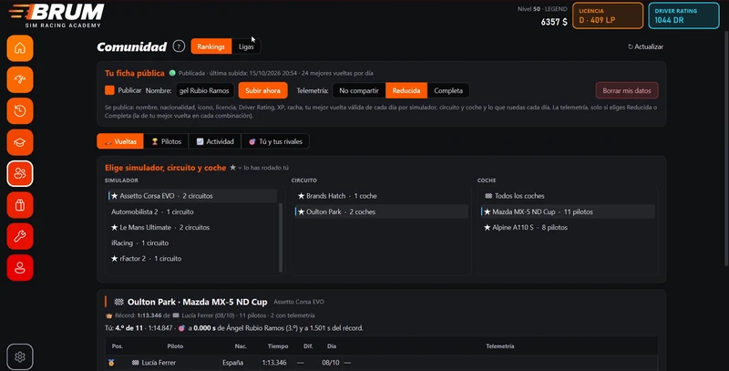
ComunidadYa está en la app, en desarrollo: rankings por circuito y coche, ligas y rivales.Es una beta que ya puedes usar para entrenar, grabar y analizar tus tandas. Seguimos en construcción: hay fallos y funciones por terminar. Lo que me cuentes decide qué se hace después, así que si algo no va, si echas algo en falta o tienes una idea, escríbeme.
También desde la app: «Mándame feedback», en Inicio.
Versiones
1.0 en caminoCoach con IA… y lo que pidas
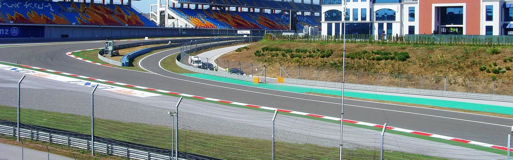
Cada frenada, cada piano y cada metro quedan grabados. Lo siguiente: una IA que te ayude a entenderlos.
Es justo para eso. Fundamentos está abierto desde el primer día y empieza por lo básico: salir desde parado, frenar siempre en el mismo sitio y no pisar fuera.
Nada. Brum es gratis. Si te ayuda, puedes invitarme a un café en Ko-fi.
Es una beta en construcción, pero ya usable: puedes entrenar, grabar y analizar tus tandas. Aún hay fallos y funciones por terminar. La Comunidad está en pruebas y el coach con IA llegará pronto. Si algo falla, cuéntamelo.
Un PC con Windows 10 u 11 de 64 bits y uno de los seis simuladores. El instalador pesa unos 125 MB.
Es normal: el instalador todavía no está firmado. Pulsa «Más información» y luego «Ejecutar de todas formas».
No. Las tandas y la telemetría se guardan en tu PC. Para grabar, entrenar y analizar no hace falta cuenta ni conexión.
Brum lee lo que manda el simulador, así que graba igual con volante que con mando.
Sí: el plugin rF2SharedMemoryMapPlugin64.dll activado dentro del juego. Lo más fácil es instalarlo con SimHub o con Crew Chief.
Descarga la versión nueva desde esta página e instálala encima. Tus tandas se quedan donde estaban.
Descarga la beta y empieza por Fundamentos. Ya puedes entrenar y analizar tus tandas; Brum sigue en construcción.